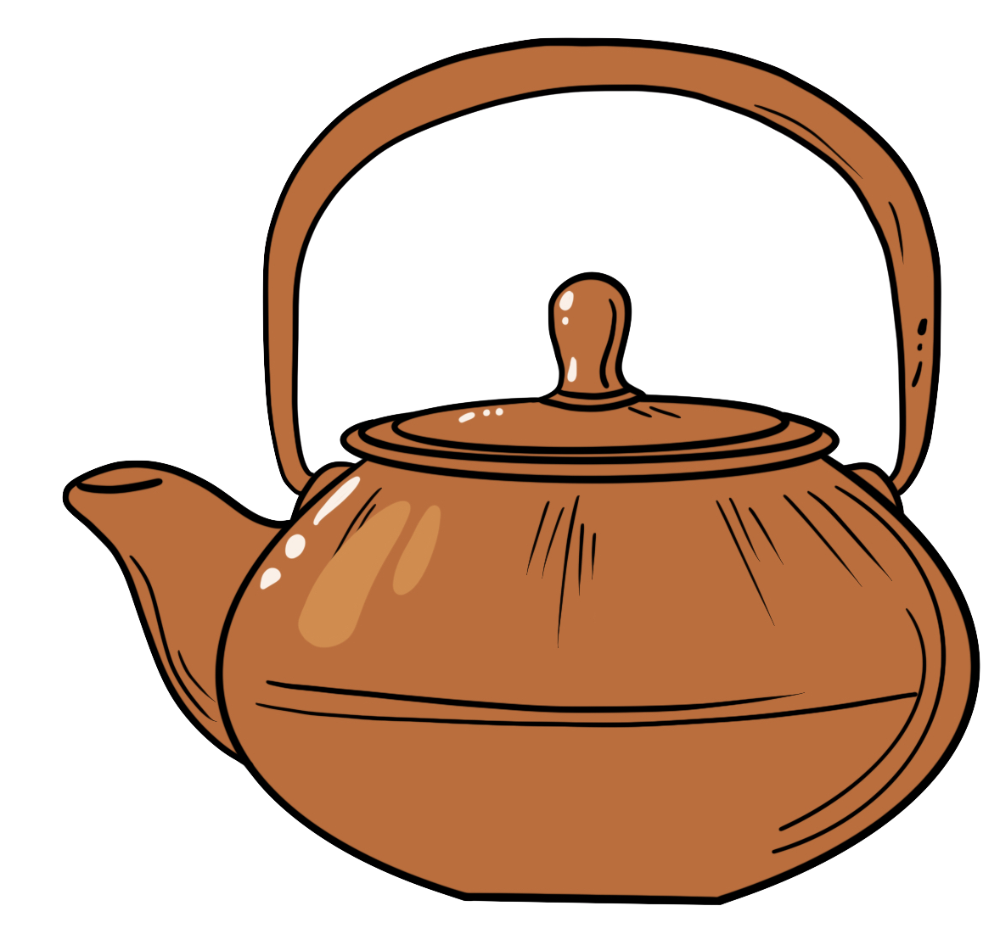
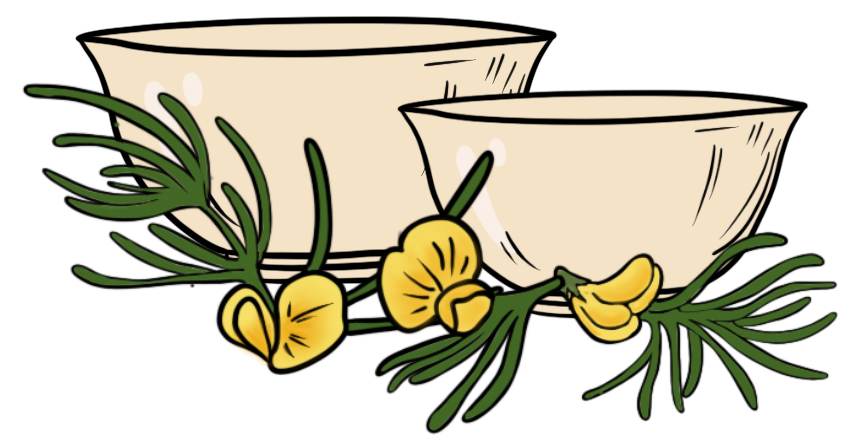
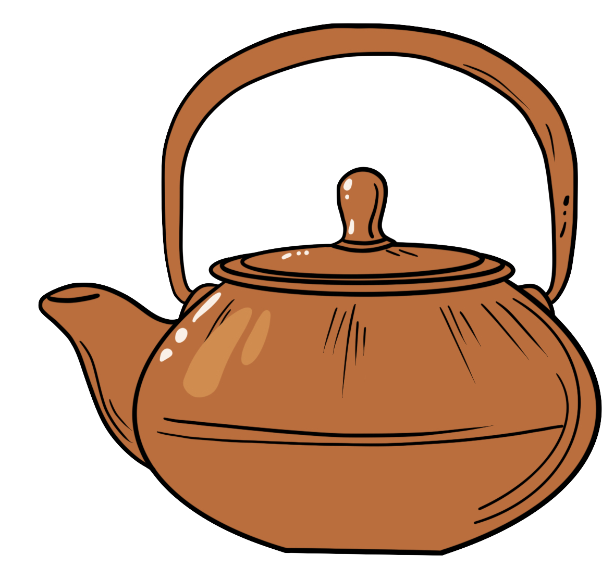
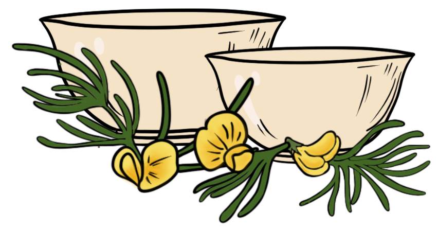

The history of tea is long and complex, spreading across multiple cultures over the span of thousands of years. Tea likely originated in the Yunnan region during the Shang dynasty as a medicinal drink. An early credible record of tea drinking dates to the 3rd century AD, in a medical text written by Hua Tuo. Tea was first introduced to Portuguese priests and merchants in Lebanon during the 16th century. Drinking tea became popular in Britain during the 17th century. The British introduced tea production, as well as tea consumption, to India, in order to compete with the Chinese monopoly on tea.